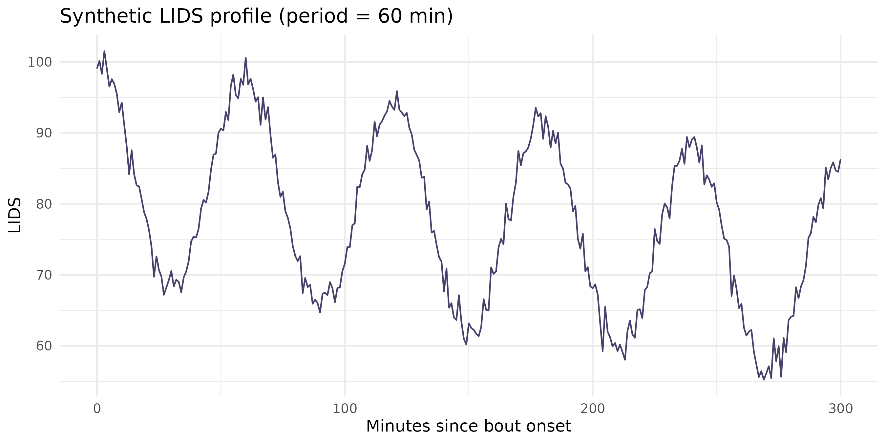
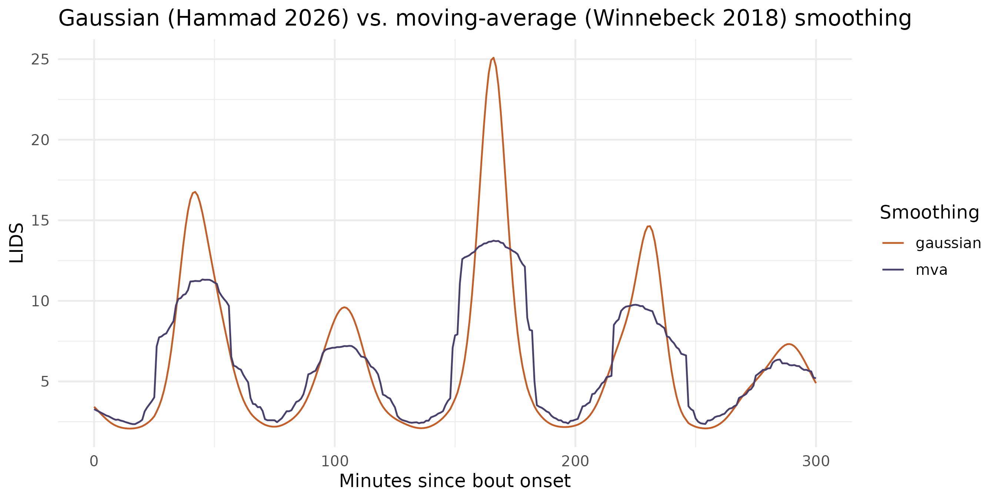

Sleep isn’t uniform from lights-out to wake-up: limb movement during sleep rises and falls in ~60-110 minute cycles that track the alternation between REM and non-REM sleep. Locomotor Inactivity During Sleep (LIDS) is a way to recover that ultradian structure from ordinary wrist/ankle actigraphy, without polysomnography – turning raw movement counts into an “inactivity” signal, then fitting a cosine to it to estimate cycle length, amplitude, and how inactivity trends over the course of the night.
zeitR’s LIDS module ports two papers:
-
Winnebeck, Fischer, Leise & Roenneberg (2018),
Current Biology – the original method (adults/adolescents): the
100/(1+x)transform, moving-average smoothing, a plain cosine fit, and the Munich Rhythmicity Index (MRI) for period selection. - Hammad, Schoch, Engelmann, Spock, Kurth & Winnebeck (2026), SLEEP – an infant-tuned extension: Gaussian smoothing, a sloped cosine (adding a linear trend term to capture the well-documented overnight decline in inactivity), and a period scan tuned for shorter (~60 min) cycles.
This module has not yet been validated against
pyActigraphy’s LIDS class or an external
reference dataset – see ?compute_lids and
?fit_lids for exactly what’s ported from which paper, and
treat results as exploratory until a parity check is run.
The pipeline in one call: compute_lids()
For a zeitr_result from run_pipeline() or
run_pipeline_native(),
compute_lids() does everything: extracts sleep bouts,
transforms and fits each one, and returns a tibble with one row per
bout.
FILE <- system.file("extdata", "input1.txt", package = "zeitR")
TZ <- "America/Sao_Paulo"
result <- run_pipeline_native(FILE, tz = TZ, quiet = TRUE)
#> ℹ Reading input1.txt ...
#> ✔ [input1] Done. 52 main night(s), 0 secondary episode(s).
lids_bouts <- compute_lids(result, duration_range = c(3, 12))
lids_bouts
#> # A tibble: 36 × 14
#> participant_id bout_id bout_start bout_end duration_h
#> <chr> <int> <dttm> <dttm> <dbl>
#> 1 input1 1 2021-05-31 01:28:15 2021-05-31 06:09:15 4.68
#> 2 input1 2 2021-06-02 00:25:15 2021-06-02 06:01:15 5.6
#> 3 input1 3 2021-06-02 23:42:15 2021-06-03 06:22:15 6.67
#> 4 input1 4 2021-06-04 00:01:54 2021-06-04 03:58:54 3.95
#> 5 input1 5 2021-06-04 23:45:54 2021-06-05 04:32:54 4.78
#> 6 input1 6 2021-06-06 00:41:54 2021-06-06 06:00:54 5.32
#> 7 input1 7 2021-06-07 00:13:54 2021-06-07 06:04:54 5.85
#> 8 input1 8 2021-06-08 01:53:54 2021-06-08 05:35:54 3.7
#> 9 input1 9 2021-06-08 23:53:54 2021-06-09 06:26:54 6.55
#> 10 input1 10 2021-06-10 00:34:54 2021-06-10 05:45:54 5.18
#> # ℹ 26 more rows
#> # ℹ 9 more variables: period_min <dbl>, amplitude <dbl>, offset <dbl>,
#> # slope_per_60min <dbl>, phase_rad <dbl>, pearson_r <dbl>, p_value <dbl>,
#> # mri <dbl>, passes_quality_filter <lgl>Each row is one detected sleep bout (state == 1 runs
from the pipeline output, by default – see Where bouts come from below),
with:
| Column | Meaning |
|---|---|
period_min |
Estimated ultradian cycle length (minutes) |
amplitude |
Oscillation amplitude (LIDS units) |
offset |
Inactivity level at bout start |
slope_per_60min |
Linear trend in inactivity across the bout |
phase_rad |
Phase at bout start (0 = LIDS peak at onset) |
pearson_r, p_value, mri
|
Fit quality and the Munich Rhythmicity Index |
passes_quality_filter |
TRUE if the bout clears the Winnebeck/Hammad quality
bar |
mean(lids_bouts$passes_quality_filter)
#> [1] 1
summary(lids_bouts$period_min[lids_bouts$passes_quality_filter])
#> Min. 1st Qu. Median Mean 3rd Qu. Max.
#> 36.00 51.50 101.00 98.94 123.50 180.00Under the hood: a clean synthetic example
Because a real recording’s LIDS fit is noisy, it helps to see the method on a signal built to have a known answer first: a 60-minute sloped cosine with a little noise, the kind of ultradian cycle Hammad et al. (2026) report in infants.
set.seed(1)
t <- seq(0, 300, by = 1) # 5 h, 1-min epochs
true_period <- 60
lids_clean <- 85 + 15 * cos(2 * pi * t / true_period) -
0.05 * t + rnorm(length(t), sd = 1.5)
if (has_ggplot2) {
ggplot(data.frame(t = t, lids = lids_clean), aes(t, lids)) +
geom_line(colour = "#4A3F6B") +
labs(x = "Minutes since bout onset", y = "LIDS",
title = "Synthetic LIDS profile (period = 60 min)") +
theme_minimal(base_size = 12)
}
fit_lids() recovers the period, amplitude, and slope
directly from this profile:
fit <- fit_lids(lids_clean, period_range = c(30, 120), period_step = 1)
fit[c("period_min", "amplitude", "offset", "slope_per_60min", "pearson_r", "mri")]
#> $period_min
#> [1] 60
#>
#> $amplitude
#> [1] 15.13642
#>
#> $offset
#> [1] 85.12597
#>
#> $slope_per_60min
#> [1] -3.028703
#>
#> $pearson_r
#> [1] 0.9923784
#>
#> $mri
#> [1] 30.0421From activity to LIDS: lids_transform()
In practice you start from raw activity counts, not a pre-built LIDS
profile. lids_transform() applies the
100/(1+x) non-linear transform and smooths the result –
higher activity means lower inactivity, and smoothing suppresses
epoch-to-epoch noise so the underlying oscillation is fittable.
set.seed(2)
activity <- pmax(0, 30 + 20 * sin(2 * pi * t / true_period) + rnorm(length(t), sd = 8))
lids_gaussian <- lids_transform(activity, method = "gaussian") # Hammad et al. 2026
lids_mva <- lids_transform(activity, method = "mva") # Winnebeck et al. 2018
if (has_ggplot2) {
df <- data.frame(
t = rep(t, 2),
lids = c(lids_gaussian, lids_mva),
method = rep(c("gaussian", "mva"), each = length(t))
)
ggplot(df, aes(t, lids, colour = method)) +
geom_line() +
scale_colour_manual(values = c(gaussian = "#C25E2A", mva = "#4A3F6B")) +
labs(x = "Minutes since bout onset", y = "LIDS", colour = "Smoothing",
title = "Gaussian (Hammad 2026) vs. moving-average (Winnebeck 2018) smoothing") +
theme_minimal(base_size = 12)
}
Both methods track the same underlying oscillation; Gaussian smoothing (the default) is slightly less aggressive at suppressing sharp transients, which matters more for the shorter cycles and higher amplitudes seen in infants than for adults.
Where bouts come from
compute_lids()’s bout_source argument
controls how sleep bouts are identified:
-
"state"(used automatically above, sinceresult$dataalready has astatecolumn) – contiguousstate == 1runs from an existing zeitR pipeline result. This is almost always what you want if you’ve already runrun_pipeline()orrun_pipeline_native(). -
"roenneberg"– ignores anystatecolumn and runs the standalonedetect_lids_bouts()relative- immobility detector directly on raw activity, reproducing Winnebeck/Hammad’s own bout-detection method rather than zeitR’s Crespo/Vallim pipelines. Use this for activity data you haven’t run through either pipeline. -
"auto"(the default) picks"state"if available,"roenneberg"otherwise.
bouts <- detect_lids_bouts(
result$data$datetime, result$data$activity,
duration_range = c(3, 12)
)
nrow(bouts)
#> [1] 39
head(bouts)
#> # A tibble: 6 × 5
#> bout_id bout_start bout_end duration_h n_epochs
#> <int> <dttm> <dttm> <dbl> <int>
#> 1 1 2021-05-27 23:40:15 2021-05-28 07:03:15 7.38 444
#> 2 2 2021-05-28 23:28:15 2021-05-29 07:30:15 8.03 483
#> 3 3 2021-05-30 22:17:15 2021-05-31 08:03:15 9.77 587
#> 4 4 2021-05-31 23:24:15 2021-06-01 07:10:15 7.77 467
#> 5 5 2021-06-02 23:36:15 2021-06-03 07:49:15 8.22 494
#> 6 6 2021-06-03 22:43:54 2021-06-04 07:46:54 9.05 538Quality filtering
Not every bout yields a clean ultradian fit – a device removed
mid-sleep, an unusually short or fragmented bout, or genuine absence of
rhythmicity can all produce a poor fit. compute_lids()
flags (rather than silently drops) bouts failing the Winnebeck/Hammad
quality bar:
table(lids_bouts$passes_quality_filter)
#>
#> TRUE
#> 36
lids_bouts[!lids_bouts$passes_quality_filter,
c("bout_id", "duration_h", "pearson_r", "p_value", "offset")]
#> # A tibble: 0 × 5
#> # ℹ 5 variables: bout_id <int>, duration_h <dbl>, pearson_r <dbl>,
#> # p_value <dbl>, offset <dbl>Adjust the thresholds directly if the defaults
(min_r = 0.4, max_p = 0.05,
offset_bounds = c(1, 99)) don’t suit your data:
compute_lids(result, min_r = 0.3, max_p = 0.1)Study-level summaries
For a whole cohort, study_lids_metrics() reduces each
participant’s quality-filtered bouts to one row – median and IQR period,
amplitude, offset, and slope – ready for syncR::sync() the
same way study_sleep_metrics() and
study_summary() already are.
results <- run_pipeline_native_batch("recordings/", tz = "America/Sao_Paulo")
study_lids_metrics(results, min_bouts = 3)Next steps
-
?compute_lids– full argument reference,bout_sourcedetails, and the quality-filter rationale -
?fit_lids,?lids_transform– the underlying cosine fit and smoothing, if you need to build a custom pipeline around them -
?detect_lids_bouts– the standalone bout detector, including what differs from the Winnebeck/Hammad notebook it was ported from - Winnebeck et al. (2018), Current Biology 28(1), 49-59.e5, https://doi.org/10.1016/j.cub.2017.11.063
- Hammad et al. (2026), SLEEP – infant ultradian cycle lengthening, https://zenodo.org/records/18199381